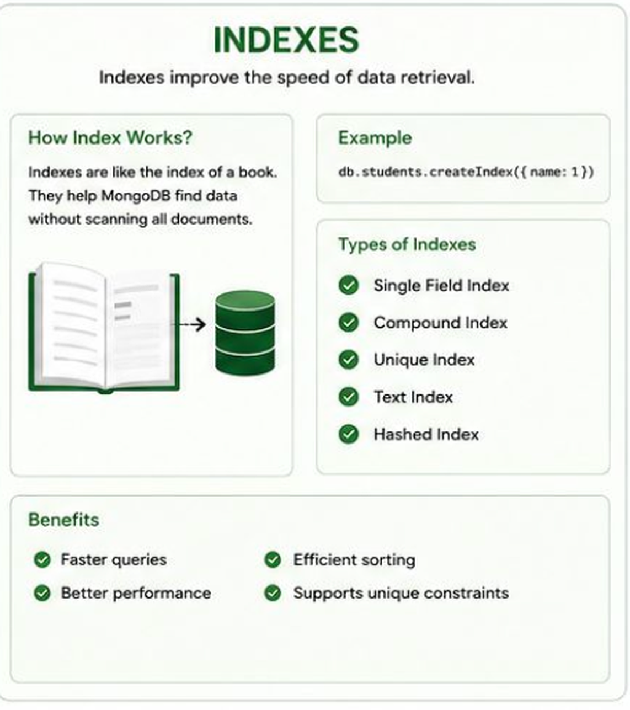
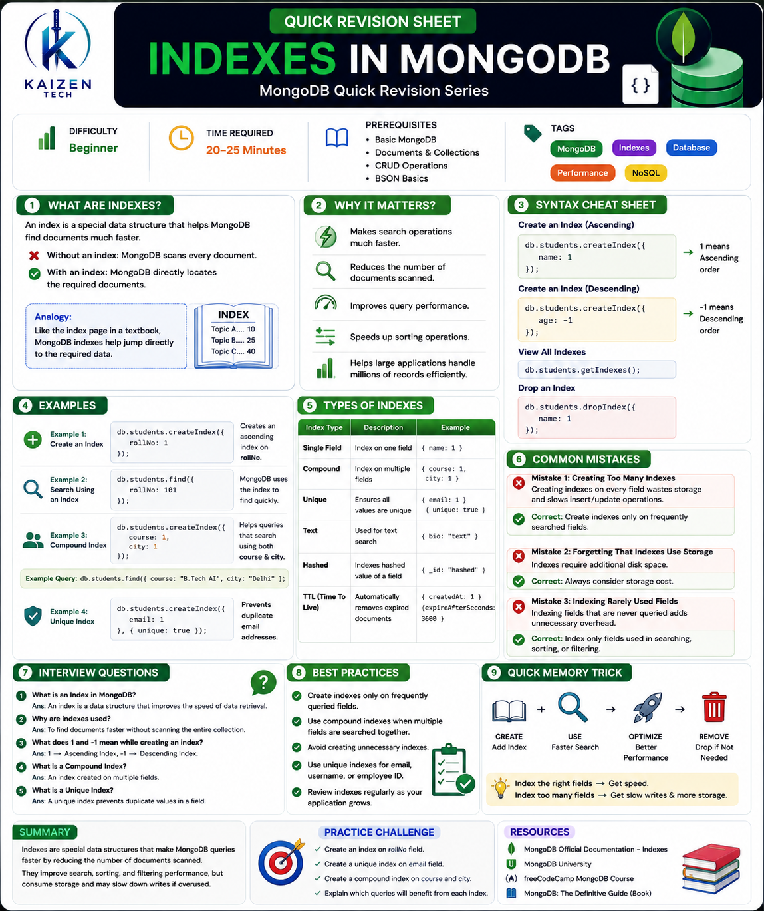

Title: Indexes in MongoDB
Short Description: Learn how MongoDB indexes improve query performance by allowing the database to find documents quickly without scanning every record. Understand different index types, syntax, examples, and best practices.
Difficulty: Beginner
Time Required: 20–25 minutes
Prerequisites:
- Basic understanding of MongoDB
- Knowledge of Documents and Collections
- Familiarity with CRUD Operations
- Basic understanding of BSON
- MongoDB installed (optional for practice)
Tags: MongoDB Indexes Database Performance NoSQL
Table of Contents (clickable)
- What are Indexes
- Why it matters
- Syntax
- Examples
- Common Mistakes
- Interview Questions
- Quick Revision Sheet
- Practice Questions
- Resources
What are Indexes
An Index is a special data structure that helps MongoDB find documents much faster.
Imagine a textbook with 500 pages. If you want to find the topic "Binary Search", you don't read every page—you simply open the index page at the back of the book. The index tells you the page number directly.
MongoDB indexes work in the same way.
- Without an index, MongoDB checks every document one by one.
- With an index, MongoDB directly locates the required documents.
For example, suppose you have a students collection containing 1,000,000 student records.
If you search for:
db.students.find({
rollNo:1056
});Without an index, MongoDB scans all documents.
With an index on rollNo, MongoDB directly jumps to the matching record.

Figure: Indexes improve the speed of data retrieval like a book index.
Why it matters
Indexes are important because they improve the speed and efficiency of database operations.
Some reasons why indexes matter are:
- They make search operations much faster.
- They reduce the number of documents MongoDB needs to scan.
- They improve query performance.
- They speed up sorting operations.
- They help large applications handle millions of records efficiently.
Without indexes, MongoDB performs a Collection Scan, which becomes slow as data grows.
Syntax
Create an Index
db.students.createIndex({
name:1
});1 means Ascending order.
Descending Index
db.students.createIndex({
age:-1
});-1 means Descending order.
View All Indexes
db.students.getIndexes();Drop an Index
db.students.dropIndex({
name:1
});Examples
Example 1: Create an Index
db.students.createIndex({
rollNo:1
});This creates an ascending index on the rollNo field.
Example 2: Search Using an Index
db.students.find({
rollNo:101
});MongoDB uses the index to quickly find the matching document.
Example 3: Compound Index
db.students.createIndex({
course:1,
city:1
});This index helps queries that search using both course and city.
Example:
db.students.find({
course:"B.Tech AI",
city:"Delhi"
});Example 4: Unique Index
db.students.createIndex(
{
email:1
},
{
unique:true
}
);This prevents duplicate email addresses.
Common Mistakes
Mistake 1: Creating Too Many Indexes
Wrong
Creating indexes on every field.
This wastes storage and slows insert/update operations.
Correct
Create indexes only on frequently searched fields.
Mistake 2: Forgetting That Indexes Use Storage
Some beginners think indexes don't consume space.
Correct
Indexes require additional disk space.
Mistake 3: Creating an Index on Rarely Used Fields
Suppose users never search by phone number. Creating an index like:
db.students.createIndex({
phone:1
});adds unnecessary overhead.
Correct
Index only those fields used in searching, sorting, or filtering.
Interview Questions
1. What is an Index in MongoDB?
2. Why are indexes used?
3. What does 1 and -1 mean while creating an index?
4. What is a Compound Index?
5. What is a Unique Index?
Quick Revision Sheet

Practice Questions
Easy
- What is an Index?
- Why do we use indexes?
- What does
1represent while creating an index?
Medium
- Create an index on the
namefield. - Create a descending index on
age. - Create a compound index using
courseandcity. - View all indexes in a collection.
Hard
Design indexes for a Student Management System.
- Create an index on rollNo.
- Create a unique index on email.
- Create a compound index on course and city.
- Explain which queries will benefit from each index.
- Explain why creating too many indexes can reduce performance.
Resources
- MongoDB Official Documentation – Indexes
- MongoDB University
- freeCodeCamp MongoDB Course
- MongoDB: The Definitive Guide (Book)